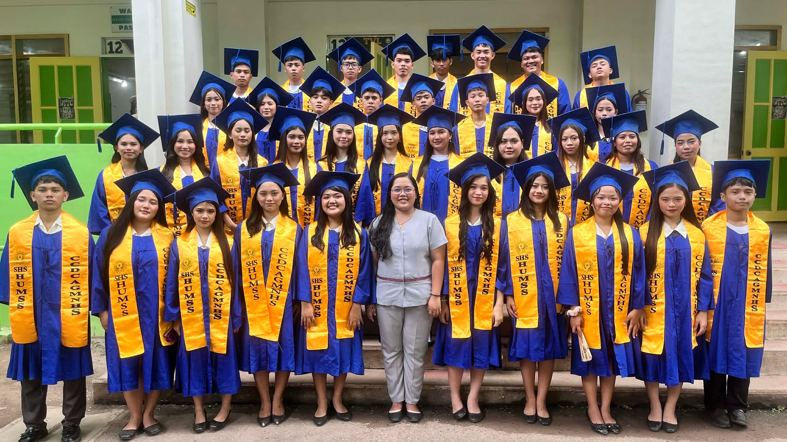

Senior High School was a truly transformative chapter of my life, a blend of late-night cramming, shared laughter, and quiet personal growth. Beyond the lessons inside the classroom, it was the unspoken moments with friends and mentors that shaped me the most. Facing the academic hurdles and pressure taught me resilience, while the shared victories brought pure joy. Every mistake was a lesson, and every triumph a milestone. Looking back, I am deeply grateful for every challenge that built my strength and every friendship that brightened the way. I walk into the next chapter carrying invaluable memories and a clearer vision of who I am becoming.

My SHS Journey
My Senior High School years were a defining chapter filled with personal breakthroughs, lasting friendships, and valuable life lessons. Moving past the textbooks, I discovered a stronger sense of purpose, learned to embrace independence, and grew more confident with every hurdle I overcame. The people I walked this road with made every triumph sweeter and every difficulty easier to bear. I leave this stage not just with knowledge, but with cherished memories and a steady heart, ready to step boldly into whatever lies ahead.
Gr 11 Highlights
Stepping into Grade 11 felt like stepping onto a whole new playing field. Adapting to specialized subjects and a heavier workload was definitely a shock at first, but it pushed me to step up, manage my time better, and take ownership of my growth. Along the way, the new friendships I formed made all the late nights and academic pressure feel manageable—and even fun. Looking back, Grade 11 wasn't just a year of adjustment; it was the year I built the confidence and maturity needed to handle whatever comes next.
Grade 12 Achievements
Grade 12 was a demanding yet deeply rewarding final stretch. Between rigorous research projects, leading group presentations, and preparing for college entrance exams, the workload pushed me to my limits. However, navigating those stressful moments honed my time management, leadership, and teamwork skills. Balancing my academic responsibilities alongside my service allowed me to grow in ways I never expected. Capping off this journey with With Honors and the Best in Sakristy award proved to me that dedication and faith pay off. Grade 12 truly built my confidence and prepared me to take on the future.